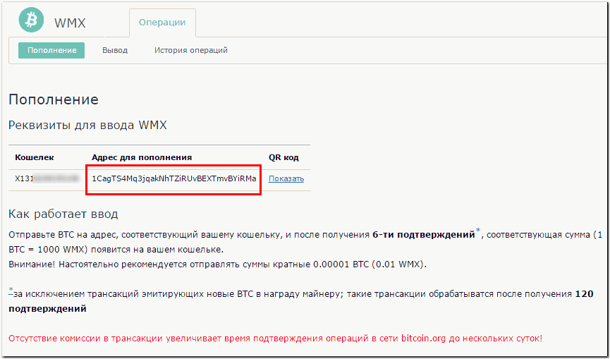
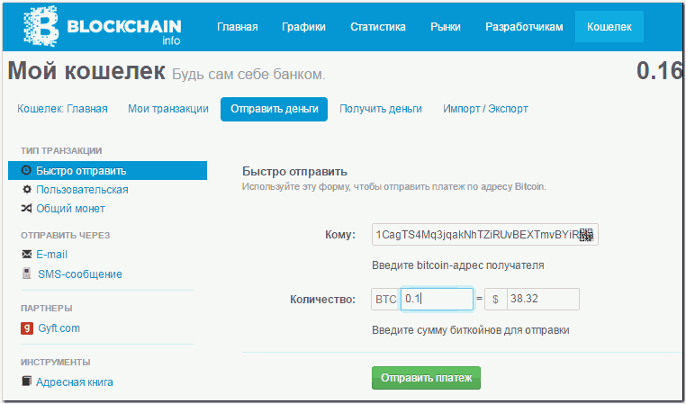
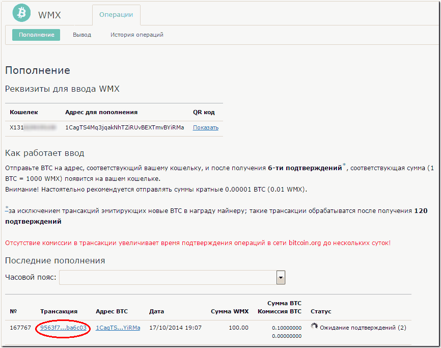
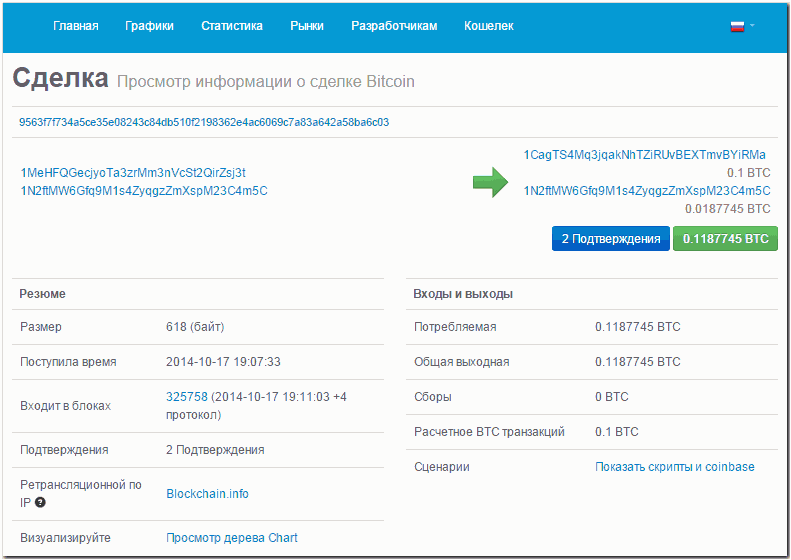
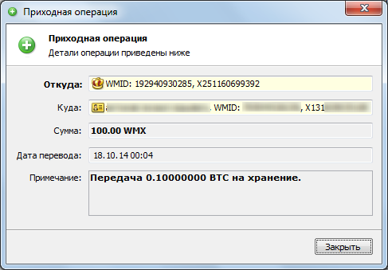
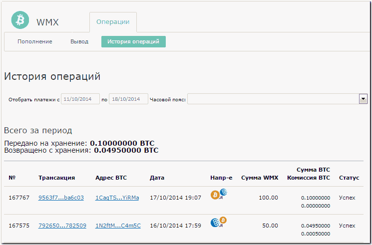

Пополнение WMX-кошельков
Сервис пополнения и вывода WMX (wmx.wmtransfer.com) дает возможность участникам WebMoney пополнять титульные знаки WMX, переводя свои BTC на хранение гаранту WMX.
Для пополнения WMX-кошельков необходимо перейти на соответствующую страницу сервиса https://wmx.wmtransfer.com/Home/TopUp и скопировать bitcion-адрес своего WMX-кошелька.

Далее нужно перейти в свой bitcoin-кошелек и выполнить перевод по данному адресу.

После отправки платежа в разделах сервиса Пополнение и История операций сформируется транзакция. Параметры перевода в системе Bitcoin можно получить, нажав на ссылку с номером транзакции (появляется в таблице после получения хотя бы одного подтверждения).

Откроется новая закладка (окно) браузера с данными о проводимой сделке.

После получения необходимого количества подтверждений средства будут зачислены на bitcoin-кошелек.

Все платежи ввода-вывода WMX отображаются в разделе История операций.
